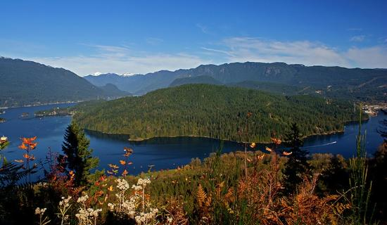

BURNABY MOUNTAIN
DESCRIPTION
Located east of downtown Vancouver and home to Simon Fraser University, Burnaby Mountain has several trails that are popular with hikers and mountain bikers. The majority of the trails are on the east side of the mountain, just off of North Road near the Coquilam boundary and they have different ratings according to their difficulty. There are many trails on Burnaby Mountain and one should plan their own route based on how long they want to spend outside. We have chosen a description below where the hike starts from the eastern edge of the Pipeline Trail along North Road and goes to the top of the mountain and back down, looping through several trails along the way. From the parking area, walk past the signboard with a map of the area and look for the North Road Trail that starts just 50 meters on your right. Take this trail and walk uphill, being careful for any mountain bikers riding downhill. Continue walking along this route as it cross several connecting paths that go from North Road to the Powerline Trail. Eventually, you will reach a crossing trail where there are several wooden ramps for bikers to ride across and do tricks. Go right and walk towards the fence. Make a left and walk alongside the fence and at the immediate junction, go left and follow the Dead Moped Trail as it winds its way through the forest of Burnaby Mountain. The Dead Moped Trail eventually reaches a 4-way crossing. Go straight for the longer version or go left for a shorter walk. Both will take you to the Trans Canada Trail, where you will go left and walk back up the hill towards the main map and signboard. Catch your breath at the signboard before following the Trans Canada Trail up the steep slope. The first junction up the steep hill is with Mel's Trail. At this point, you have to decide whether you want to hike up to the SFU Campus or just loop through the trails on Burnaby Mountain. We'll continue up the Trans Canada Trail towards SFU and take Mel's Trail on the way back down. The next junction is with Cardiac Hill, appropriately named for it's very steep slope. Go left at this junction and follow Cardiac Hill as it makes its way up to University Drive. Once at the top, go right and walk alongside the road towards the bus loop area where there are coffee shops and cafes. After your break, return to the trails by walking back along University Drive and down Cardiac Hill to the junction with the Trans Canada Trail. Go right and continue downhill to the junction with Mel's Trail. Go right onto Mel's Trail and up the steps as it climbs quickly before gradually levelling out and weaving through the forest. Cross the junction with the Gear Jammer Trail and continue heading west until you reach a junction with Nicole's Trail (also Poplar Trail to the right). Go left and walk down Nicole's Trail until you reach the bottom where it joins with the Pipeline Trail. Now you are at the bottom of the Pipeline Trail near where it meets Gaglardi Way. Go left and walk along the wide trail, crossing the wooden bridge before walking up the steep hill. Cross under the power lines and continue straight as it's a short distance back to North Road where you started your hike